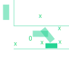

The Legal System
Money Wasted
A Shit Ton (but not mine)Highlights
The two douchey plaintiff lawyers read depositions in monotone dialogue. Highlights include:Question - "Were you drinking all night?"
Adam's Retort - "I think that paints a picture that we were drunk when we left."
Question - "Why didn't you call the police?"
Clay's Retort - "We were scared out of our gourd!"
Douchbag plaintiff attorney went on to repeat this 3x
Question - "Do you know how fast you are moving 3 feet at 7mph?"
My Retort - "7mph"
Miss Trial
Mistrial occurred when expert witness let slip that plaintiff had previously been in prison for sexual assault.Account of Events
Plantiff's witness gave an excellent account of events. X's are where he was rectangle is where my car was O is the man that said i ran him over is